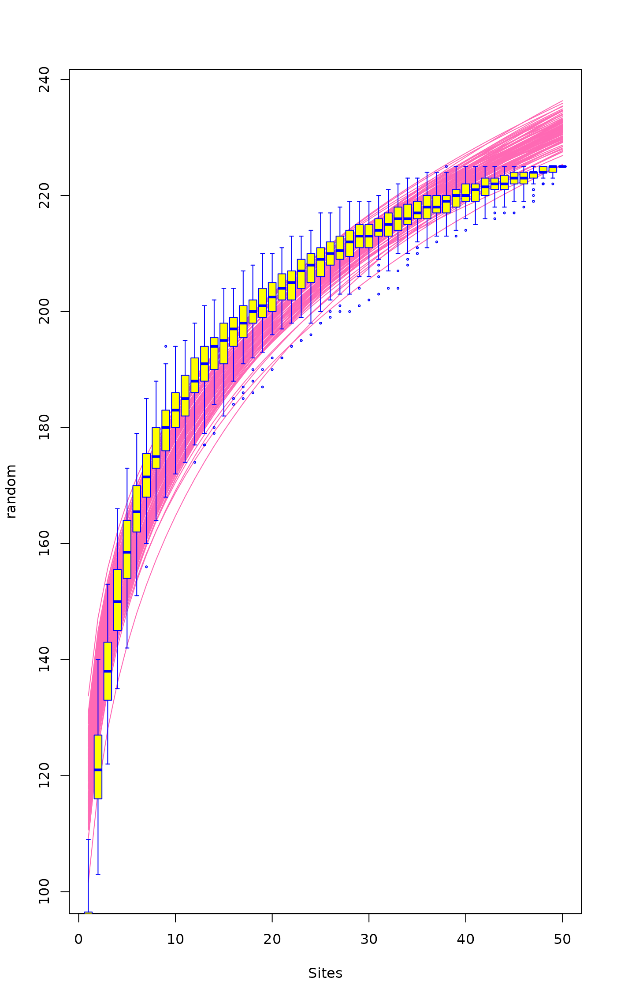

Species Accumulation Curves
specaccum.RdFunction specaccum finds species accumulation curves or the
number of species for a certain number of sampled sites or
individuals.
specaccum(comm, method = "exact", permutations = 100, conditioned =TRUE, gamma = "jack1", w = NULL, subset, ...) # S3 method for specaccum plot(x, add = FALSE, random = FALSE, ci = 2, ci.type = c("bar", "line", "polygon"), col = par("fg"), lty = 1, ci.col = col, ci.lty = 1, ci.length = 0, xlab, ylab = x$method, ylim, xvar = c("sites", "individuals", "effort"), ...) # S3 method for specaccum boxplot(x, add = FALSE, ...) fitspecaccum(object, model, method = "random", ...) # S3 method for fitspecaccum plot(x, col = par("fg"), lty = 1, xlab = "Sites", ylab = x$method, ...) # S3 method for specaccum predict(object, newdata, interpolation = c("linear", "spline"), ...) # S3 method for fitspecaccum predict(object, newdata, ...) specslope(object, at)
Arguments
| comm | Community data set. |
|---|---|
| method | Species accumulation method (partial match). Method
|
| permutations | Number of permutations with |
| conditioned | Estimation of standard deviation is conditional on the empirical dataset for the exact SAC |
| gamma | Method for estimating the total extrapolated number of species in the
survey area by function |
| w | Weights giving the sampling effort. |
| subset | logical expression indicating sites (rows) to keep: missing
values are taken as |
| x | A |
| add | Add to an existing graph. |
| random | Draw each random simulation separately instead of drawing their average and confidence intervals. |
| ci | Multiplier used to get confidence intervals from standard
deviation (standard error of the estimate). Value |
| ci.type | Type of confidence intervals in the graph: |
| col | Colour for drawing lines. |
| lty | line type (see |
| ci.col | Colour for drawing lines or filling the
|
| ci.lty | Line type for confidence intervals or border of the
|
| ci.length | Length of horizontal bars (in inches) at the end of
vertical bars with |
| xlab,ylab | Labels for |
| ylim | the y limits of the plot. |
| xvar | Variable used for the horizontal axis:
|
| object | Either a community data set or fitted |
| model | Nonlinear regression model ( |
| newdata | Optional data used in prediction interpreted as number of sampling units (sites). If missing, fitted values are returned. |
| interpolation | Interpolation method used with |
| at | Number of plots where the slope is evaluated. Can be a real number. |
| ... | Other parameters to functions. |
Details
Species accumulation curves (SAC) are used to compare diversity
properties of community data sets using different accumulator
functions. The classic method is "random" which finds the mean
SAC and its standard deviation from random permutations of the data,
or subsampling without replacement (Gotelli & Colwell 2001). The
"exact" method finds the expected SAC using sample-based
rarefaction method that has been independently developed numerous
times (Chiarucci et al. 2008) and it is often known as Mao Tau
estimate (Colwell et al. 2012). The unconditional standard deviation
for the exact SAC represents a moment-based estimation that is not
conditioned on the empirical data set (sd for all samples > 0). The
unconditional standard deviation is based on an estimation of the
extrapolated number of species in the survey area (a.k.a. gamma
diversity), as estimated by function specpool. The
conditional standard deviation that was developed by Jari Oksanen (not
published, sd=0 for all samples). Method "coleman" finds the
expected SAC and its standard deviation following Coleman et
al. (1982). All these methods are based on sampling sites without
replacement. In contrast, the method = "rarefaction" finds the
expected species richness and its standard deviation by sampling
individuals instead of sites. It achieves this by applying function
rarefy with number of individuals corresponding to
average number of individuals per site.
Methods "random" and "collector" can take weights
(w) that give the sampling effort for each site. The weights
w do not influence the order the sites are accumulated, but
only the value of the sampling effort so that not all sites are
equal. The summary results are expressed against sites even when the
accumulation uses weights (methods "random",
"collector"), or is based on individuals
("rarefaction"). The actual sampling effort is given as item
Effort or Individuals in the printed result. For
weighted "random" method the effort refers to the average
effort per site, or sum of weights per number of sites. With
weighted method = "random", the averaged species richness is
found from linear interpolation of single random permutations.
Therefore at least the first value (and often several first) have
NA richness, because these values cannot be interpolated in
all cases but should be extrapolated. The plot function
defaults to display the results as scaled to sites, but this can be
changed selecting xvar = "effort" (weighted methods) or
xvar = "individuals" (with method = "rarefaction").
The summary and boxplot methods are available for
method = "random".
Function predict for specaccum can return the values
corresponding to newdata. With method "exact",
"rarefaction" and "coleman" the function uses analytic
equations for interpolated non-integer values, and for other methods
linear (approx) or spline (spline)
interpolation. If newdata is not given, the function returns
the values corresponding to the data. NB., the fitted values with
method="rarefaction" are based on rounded integer counts, but
predict can use fractional non-integer counts with
newdata and give slightly different results.
Function fitspecaccum fits a nonlinear (nls)
self-starting species accumulation model. The input object
can be a result of specaccum or a community in data frame. In
the latter case the function first fits a specaccum model and
then proceeds with fitting the nonlinear model. The function can
apply a limited set of nonlinear regression models suggested for
species-area relationship (Dengler 2009). All these are
selfStart models. The permissible alternatives are
"arrhenius" (SSarrhenius), "gleason"
(SSgleason), "gitay" (SSgitay),
"lomolino" (SSlomolino) of vegan
package. In addition the following standard R models are available:
"asymp" (SSasymp), "gompertz"
(SSgompertz), "michaelis-menten"
(SSmicmen), "logis" (SSlogis),
"weibull" (SSweibull). See these functions for
model specification and details.
When weights w were used the fit is based on accumulated
effort and in model = "rarefaction" on accumulated number of
individuals. The plot is still based on sites, unless other
alternative is selected with xvar.
Function predict for fitspecaccum uses
predict.nls, and you can pass all arguments to that
function. In addition, fitted, residuals, nobs,
coef, AIC, logLik and deviance work on
the result object.
Function specslope evaluates the derivative of the species
accumulation curve at given number of sample plots, and gives the
rate of increase in the number of species. The function works with
specaccum result object when this is based on analytic models
"exact", "rarefaction" or "coleman", and with
non-linear regression results of fitspecaccum.
Nonlinear regression may fail for any reason, and some of the
fitspecaccum models are fragile and may not succeed.
Value
Function specaccum returns an object of class
"specaccum", and fitspecaccum a model of class
"fitspecaccum" that adds a few items to the
"specaccum" (see the end of the list below):
Function call.
Accumulator method.
Number of sites. For method = "rarefaction" this
is the number of sites corresponding to a certain number of
individuals and generally not an integer, and the average
number of individuals is also returned in item individuals.
Average sum of weights corresponding to the number of
sites when model was fitted with argument w
The number of species corresponding to number of
sites. With method = "collector" this is the observed
richness, for other methods the average or expected richness.
The standard deviation of SAC (or its standard error). This
is NULL in method = "collector", and it
is estimated from permutations in method = "random", and from
analytic equations in other methods.
Permutation results with method = "random" and
NULL in other cases. Each column in perm holds one
permutation.
Matrix of accumulated weights corresponding to the
columns of the perm matrix when model was fitted with
argument w.
Only in fitspecacum:
fitted values, residuals and nonlinear model coefficients. For
method = "random" these are matrices with a column for
each random accumulation.
Only in fitspecaccum: list of fitted
nls models (see Examples on accessing these models).
References
Chiarucci, A., Bacaro, G., Rocchini, D. & Fattorini, L. (2008). Discovering and rediscovering the sample-based rarefaction formula in the ecological literature. Commun. Ecol. 9: 121--123.
Coleman, B.D, Mares, M.A., Willis, M.R. & Hsieh, Y. (1982). Randomness, area and species richness. Ecology 63: 1121--1133.
Colwell, R.K., Chao, A., Gotelli, N.J., Lin, S.Y., Mao, C.X., Chazdon, R.L. & Longino, J.T. (2012). Models and estimators linking individual-based and sample-based rarefaction, extrapolation and comparison of assemblages. J. Plant Ecol. 5: 3--21.
Dengler, J. (2009). Which function describes the species-area relationship best? A review and empirical evaluation. Journal of Biogeography 36, 728--744.
Gotelli, N.J. & Colwell, R.K. (2001). Quantifying biodiversity: procedures and pitfalls in measurement and comparison of species richness. Ecol. Lett. 4, 379--391.
Note
The SAC with method = "exact" was
developed by Roeland Kindt, and its standard deviation by Jari
Oksanen (both are unpublished). The method = "coleman"
underestimates the SAC because it does not handle properly sampling
without replacement. Further, its standard deviation does not take
into account species correlations, and is generally too low.
See also
rarefy and rrarefy are related
individual based models. Other accumulation models are
poolaccum for extrapolated richness, and
renyiaccum and tsallisaccum for
diversity indices. Underlying graphical functions are
boxplot, matlines,
segments and polygon.
Examples
#> Warning: the standard deviation is zerosp2 <- specaccum(BCI, "random") sp2#> Species Accumulation Curve #> Accumulation method: random, with 100 permutations #> Call: specaccum(comm = BCI, method = "random") #> #> #> Sites 1.00000 2.00000 3.00000 4.00000 5.00000 6.00000 7.00000 #> Richness 91.81000 122.76000 139.38000 150.78000 159.46000 166.32000 171.41000 #> sd 7.61404 7.48483 6.66482 6.25159 6.00407 5.80818 5.34675 #> #> Sites 8.00000 9.00000 10.00000 11.00000 12.00000 13.00000 14.00000 #> Richness 176.22000 180.10000 183.13000 186.09000 188.33000 190.77000 192.93000 #> sd 5.02635 4.84195 4.81927 4.72495 4.31594 4.37129 4.17606 #> #> Sites 15.00000 16.00000 17.0000 18.00000 19.00000 20.00000 21.00000 #> Richness 195.04000 196.68000 198.4000 199.86000 201.31000 202.65000 203.92000 #> sd 4.14855 4.08466 3.8795 3.86912 3.81039 3.79892 3.83414 #> #> Sites 22.0000 23.0000 24.00000 25.00000 26.00000 27.00000 28.00000 #> Richness 205.0400 206.3000 207.39000 208.59000 209.45000 210.43000 211.24000 #> sd 3.7225 3.4451 3.34209 3.42921 3.25165 3.16947 2.99872 #> #> Sites 29.0000 30.00000 31.00000 32.0000 33.00000 34.00000 35.00000 #> Richness 212.1700 212.97000 213.87000 214.7500 215.59000 216.34000 216.98000 #> sd 3.0453 2.94205 2.99378 2.8758 2.77104 2.54741 2.55833 #> #> Sites 36.00000 37.00000 38.00000 39.00000 40.00000 41.00000 42.00000 #> Richness 217.53000 218.10000 218.99000 219.59000 220.31000 220.89000 221.41000 #> sd 2.57201 2.56038 2.43914 2.13246 2.11151 1.91694 1.82627 #> #> Sites 43.00000 44.00000 45.00000 46.00000 47.00000 48.00000 49.00000 #> Richness 221.89000 222.42000 222.76000 223.20000 223.63000 224.20000 224.67000 #> sd 1.79728 1.70074 1.56425 1.48392 1.31545 1.03475 0.63652 #> #> Sites 50 #> Richness 225 #> sd 0summary(sp2)#> 1 sites 2 sites 3 sites 4 sites #> Min. : 77.00 Min. :105.0 Min. :126.0 Min. :137.0 #> 1st Qu.: 86.00 1st Qu.:118.0 1st Qu.:134.0 1st Qu.:147.0 #> Median : 91.50 Median :123.0 Median :139.0 Median :151.0 #> Mean : 91.81 Mean :122.8 Mean :139.4 Mean :150.8 #> 3rd Qu.: 98.00 3rd Qu.:128.0 3rd Qu.:144.2 3rd Qu.:155.0 #> Max. :109.00 Max. :138.0 Max. :154.0 Max. :164.0 #> 5 sites 6 sites 7 sites 8 sites #> Min. :146.0 Min. :153.0 Min. :158.0 Min. :166.0 #> 1st Qu.:155.8 1st Qu.:162.8 1st Qu.:168.0 1st Qu.:173.0 #> Median :159.5 Median :166.0 Median :171.0 Median :176.0 #> Mean :159.5 Mean :166.3 Mean :171.4 Mean :176.2 #> 3rd Qu.:163.0 3rd Qu.:169.2 3rd Qu.:175.0 3rd Qu.:179.0 #> Max. :174.0 Max. :181.0 Max. :186.0 Max. :192.0 #> 9 sites 10 sites 11 sites 12 sites #> Min. :170.0 Min. :172.0 Min. :176.0 Min. :178.0 #> 1st Qu.:177.0 1st Qu.:180.0 1st Qu.:183.0 1st Qu.:185.0 #> Median :180.0 Median :183.0 Median :185.5 Median :188.0 #> Mean :180.1 Mean :183.1 Mean :186.1 Mean :188.3 #> 3rd Qu.:183.0 3rd Qu.:186.0 3rd Qu.:189.0 3rd Qu.:190.0 #> Max. :197.0 Max. :197.0 Max. :199.0 Max. :202.0 #> 13 sites 14 sites 15 sites 16 sites #> Min. :180.0 Min. :182.0 Min. :186.0 Min. :187.0 #> 1st Qu.:188.0 1st Qu.:190.0 1st Qu.:192.0 1st Qu.:194.0 #> Median :191.0 Median :193.0 Median :195.0 Median :196.5 #> Mean :190.8 Mean :192.9 Mean :195.0 Mean :196.7 #> 3rd Qu.:193.0 3rd Qu.:195.0 3rd Qu.:197.2 3rd Qu.:199.0 #> Max. :205.0 Max. :205.0 Max. :208.0 Max. :211.0 #> 17 sites 18 sites 19 sites 20 sites #> Min. :190.0 Min. :192.0 Min. :194.0 Min. :194.0 #> 1st Qu.:196.0 1st Qu.:197.0 1st Qu.:198.8 1st Qu.:200.0 #> Median :198.0 Median :200.0 Median :201.0 Median :202.0 #> Mean :198.4 Mean :199.9 Mean :201.3 Mean :202.7 #> 3rd Qu.:201.0 3rd Qu.:202.0 3rd Qu.:204.0 3rd Qu.:205.0 #> Max. :212.0 Max. :213.0 Max. :213.0 Max. :214.0 #> 21 sites 22 sites 23 sites 24 sites #> Min. :196.0 Min. :197.0 Min. :200.0 Min. :200.0 #> 1st Qu.:201.0 1st Qu.:202.8 1st Qu.:204.0 1st Qu.:205.0 #> Median :204.0 Median :205.0 Median :206.0 Median :207.0 #> Mean :203.9 Mean :205.0 Mean :206.3 Mean :207.4 #> 3rd Qu.:206.0 3rd Qu.:207.0 3rd Qu.:209.0 3rd Qu.:210.0 #> Max. :214.0 Max. :215.0 Max. :215.0 Max. :217.0 #> 25 sites 26 sites 27 sites 28 sites #> Min. :201.0 Min. :202.0 Min. :204.0 Min. :205.0 #> 1st Qu.:206.0 1st Qu.:207.0 1st Qu.:208.0 1st Qu.:209.0 #> Median :208.0 Median :209.0 Median :210.0 Median :211.0 #> Mean :208.6 Mean :209.4 Mean :210.4 Mean :211.2 #> 3rd Qu.:211.0 3rd Qu.:212.0 3rd Qu.:213.0 3rd Qu.:213.2 #> Max. :217.0 Max. :217.0 Max. :217.0 Max. :218.0 #> 29 sites 30 sites 31 sites 32 sites 33 sites #> Min. :205.0 Min. :205 Min. :205.0 Min. :205.0 Min. :209.0 #> 1st Qu.:210.0 1st Qu.:211 1st Qu.:212.0 1st Qu.:213.0 1st Qu.:214.0 #> Median :212.0 Median :213 Median :214.0 Median :215.0 Median :216.0 #> Mean :212.2 Mean :213 Mean :213.9 Mean :214.8 Mean :215.6 #> 3rd Qu.:214.0 3rd Qu.:215 3rd Qu.:216.0 3rd Qu.:217.0 3rd Qu.:217.2 #> Max. :219.0 Max. :220 Max. :221.0 Max. :222.0 Max. :223.0 #> 34 sites 35 sites 36 sites 37 sites 38 sites #> Min. :211.0 Min. :211.0 Min. :211.0 Min. :211.0 Min. :212 #> 1st Qu.:214.8 1st Qu.:215.0 1st Qu.:216.0 1st Qu.:216.8 1st Qu.:218 #> Median :216.0 Median :217.0 Median :218.0 Median :218.0 Median :219 #> Mean :216.3 Mean :217.0 Mean :217.5 Mean :218.1 Mean :219 #> 3rd Qu.:218.0 3rd Qu.:218.2 3rd Qu.:219.0 3rd Qu.:220.0 3rd Qu.:221 #> Max. :223.0 Max. :223.0 Max. :223.0 Max. :223.0 Max. :224 #> 39 sites 40 sites 41 sites 42 sites #> Min. :214.0 Min. :214.0 Min. :216.0 Min. :216.0 #> 1st Qu.:218.0 1st Qu.:219.0 1st Qu.:220.0 1st Qu.:220.8 #> Median :220.0 Median :220.0 Median :221.0 Median :222.0 #> Mean :219.6 Mean :220.3 Mean :220.9 Mean :221.4 #> 3rd Qu.:221.0 3rd Qu.:222.0 3rd Qu.:222.0 3rd Qu.:223.0 #> Max. :224.0 Max. :224.0 Max. :224.0 Max. :224.0 #> 43 sites 44 sites 45 sites 46 sites #> Min. :217.0 Min. :217.0 Min. :219.0 Min. :219.0 #> 1st Qu.:221.0 1st Qu.:221.0 1st Qu.:222.0 1st Qu.:222.0 #> Median :222.0 Median :223.0 Median :223.0 Median :223.0 #> Mean :221.9 Mean :222.4 Mean :222.8 Mean :223.2 #> 3rd Qu.:223.0 3rd Qu.:224.0 3rd Qu.:224.0 3rd Qu.:224.0 #> Max. :225.0 Max. :225.0 Max. :225.0 Max. :225.0 #> 47 sites 48 sites 49 sites 50 sites #> Min. :219.0 Min. :220.0 Min. :222.0 Min. :225 #> 1st Qu.:223.0 1st Qu.:224.0 1st Qu.:224.8 1st Qu.:225 #> Median :224.0 Median :225.0 Median :225.0 Median :225 #> Mean :223.6 Mean :224.2 Mean :224.7 Mean :225 #> 3rd Qu.:225.0 3rd Qu.:225.0 3rd Qu.:225.0 3rd Qu.:225 #> Max. :225.0 Max. :225.0 Max. :225.0 Max. :225#> Asym xmid slope #> 258.440682 2.442061 1.858694fitted(mod1)#> [1] 94.34749 121.23271 137.45031 148.83053 157.45735 164.31866 169.95946 #> [8] 174.71115 178.78954 182.34254 185.47566 188.26658 190.77402 193.04337 #> [15] 195.11033 197.00350 198.74606 200.35705 201.85227 203.24499 204.54643 #> [22] 205.76612 206.91229 207.99203 209.01150 209.97609 210.89054 211.75903 #> [29] 212.58527 213.37256 214.12386 214.84180 215.52877 216.18692 216.81820 #> [36] 217.42437 218.00703 218.56767 219.10762 219.62811 220.13027 220.61514 #> [43] 221.08369 221.53679 221.97528 222.39991 222.81138 223.21037 223.59747 #> [50] 223.97327plot(sp1)## Fit Arrhenius models to all random accumulations mods <- fitspecaccum(sp2, "arrh") plot(mods, col="hotpink")#> [1] 340.7122 311.5739 332.7511 329.8677 306.9549 363.5259 323.2782 357.9007 #> [9] 331.7963 346.5640 324.5067 357.1213 358.3400 370.1133 335.8134 324.3848 #> [17] 330.9454 367.4792 303.0902 324.6761 338.3744 360.8688 312.0577 288.1283 #> [25] 339.2530 329.4958 351.9226 343.5077 327.5466 296.1242 325.1281 291.0844 #> [33] 337.1682 335.5315 360.6125 330.8142 290.5832 361.9972 326.0509 347.0245 #> [41] 359.7191 329.0389 325.6456 305.6033 367.3692 356.3464 336.6677 349.8181 #> [49] 348.6977 346.9175 339.7935 327.1447 326.0754 329.4953 338.3603 316.1004 #> [57] 305.8381 330.1384 352.6576 355.0486 285.3968 347.5712 338.6193 350.5739 #> [65] 261.6964 334.1618 330.5538 330.1809 326.6868 346.7704 322.3679 337.1240 #> [73] 344.6208 326.8953 274.4535 328.6224 335.3013 329.0624 339.3059 325.8208 #> [81] 322.7001 315.7677 352.8312 348.2626 314.6693 321.8775 343.9619 310.1451 #> [89] 317.3056 339.4258 329.6412 340.5750 322.8541 299.3372 329.4863 330.1076 #> [97] 329.4451 297.8115 337.7072 302.9880